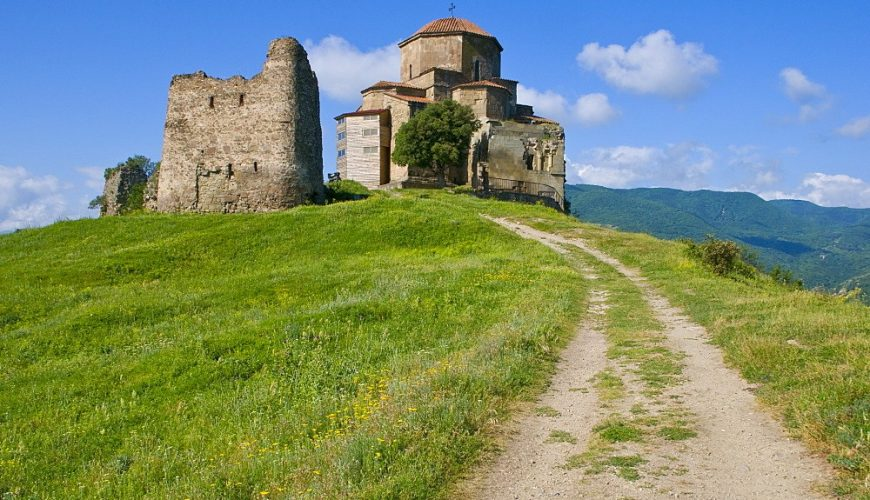
ჯვრის მონასტერი არის VI საუკუნის ტაძარი და მონასტერი, რომელიც მდებარეობს მცხეთის აღმოსავლეთით, მდინარეების მტკვრისა და არაგვის შესართავთან, მთის წვერზე. მცხეთის ჯვარი იუნესკოს მსოფლიო ხელოვნების საგანძურთა ნუსხაში არის შეტანილი. ჯვრის მონასტერთან მჭიდრო კავშირშია ქვეყნის გაქრისტიანება, რადგან ქრისტიანობის მიღებისთანავე (4 საუკუნე) ამ ადგილას მეფე მირიანმა ხის მაღალი ჯვარი აღმართა, რომელსაც თაყვანს სცემდნენ კავკასიის სხვა ქრისტიანი ერებიც. მცხეთის
ჯვრის მონასტერი:
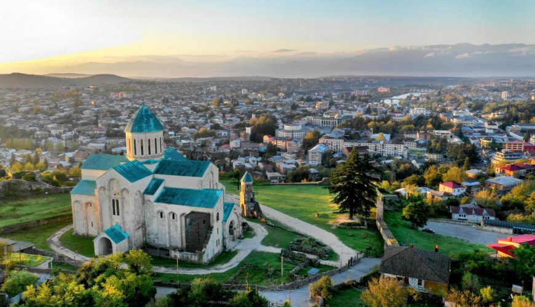
ბაგრატის ტაძარი მდებარეობს ქალაქ ქუთაისში, მდინარე რიონის მარჯვენა ნაპირთან აღმართულ კლდოვან ბორცვზე, რომელსაც უქიმერიონს უწოდებენ. ღვთისმშობლის მიძინების სახელობის ტაძარი, აგებულია 1003 წელს, ბაგრატ III-ის მეფობაში. ძეგლი წარმოადგენს ქართული შუასაუკუნეების საეკლესიო არქიტექტურაში საეტაპო მნიშვნელობის ტაძარს, როგორც თავისი არქიტექტურული გადაწყვეტით, ასევე ისტორიული და სიმბოლური მნიშვნელობითაც რადგან ის ერთიანი საქართველოს სიმბოლოა.
ბაგრატის ტაძარი:
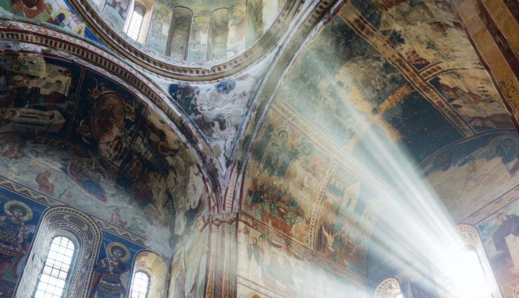
გელათის მონასტერი – ქართული ხუროთმოძღვრული ანსამბლი, შუა საუკუნეების საქართველოს კულტურის უმნიშვნელოვანეს ცენტრს წარმოადგენს, რომელიც აგებულია ქალაქ ქუთაისის ჩრდილო-აღმოსავლეთით, მდინარე წყალწითელის ხეობაში. მონასტერი დაარსებულია დავით აღმაშენებლის თაოსნობით 1106 წელს. სამონასტრო კომპლექსი შემოზღუდულია გალავნით, ანსამბლში შედის სხვადასხვა დროინდელი (ძირითადად XII-XIII სს.) შენობები. გელათის მონასტერი არის იუნესკოს მსოფლიო კულტურული მემკვიდრეობის და საქართველოს ეროვნული მნიშვნელობის კულტურის ძეგლი.
გელათის მონასტერი:
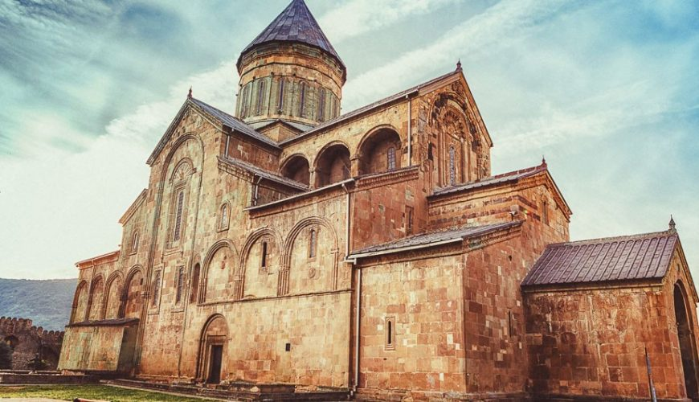
სვეტიცხოველი ყველაზე დიდი ისტორიული საეკლესიო ნაგებობაა საქართველოში დღემდე გადარჩენილთა შორის. იგი საუკუნეთა მანძილზე ქრისტიანული საქართველოს სარწმუნოებრივ ცენტრს წარმოადგენდა. ჯერ კიდევ IV საუკუნეში გაქრისტიანებულ მირიან მეფეს წმინდა ნინოს რჩევით აქ პირველი ეკლესია აუშენებია, რომელსაც ჩვენამდე არ მოუღწევია. წმ. ნინოს ეკლესიის დანგრევის შემდეგ, ვახტანგ გორგასალმა V საუკუნის II ნახევარში. XI საუკუნეში დაზიანებული ბაზილიკის ადგილზე ქართლის კათოლიკოსმა მელქისედეკმა
სვეტიცხოველის საკათედრო ტაძარი:
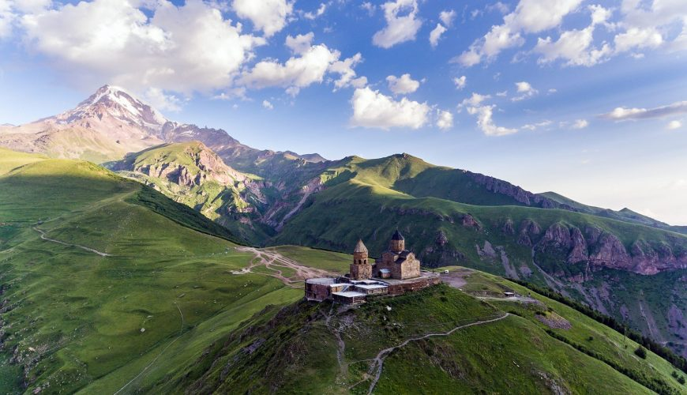
გერგეტის სამება მდებარეობს ყაზბეგის მუნიციპალიტეტში, ზღვის დონიდან 2200 მეტრზე. გერგეტის სამების ეკლესია თავისი ისტორიითა და მდებარეობით წარმოადგენს საქართველოს სახეს – ულამაზეს ბუნებაში ჩაფლული ქრისტიანული ტაძარი. გერგეთის ტაძრის აგების ზუსტი თარიღი უცნობია, თუმცა ძველი წყაროებისა და არქიტექტურული სტილის მიხედვით წმ. სამება საქართველოს ეკლესიის აღმავლობის ხანაში, XIV საუკუნეშია აგებული, არც მის მშენებლებსა და მშენებლობაზეა შემონახული ცნობები. სამება
გერგეტის სამების ეკლესია:
ყვარელი:
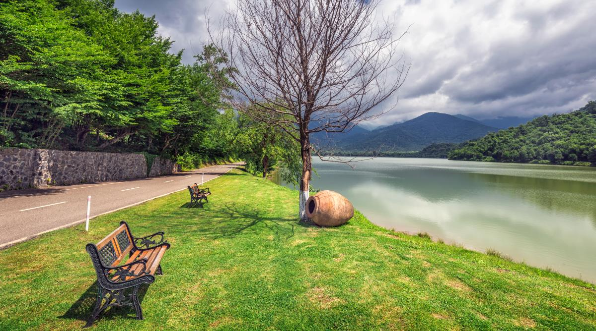
ადგილი, სადაც თავს იყრის ევროპული და აზიური კულტურის ნაზავი, ნებისმიერ მნახველს შთაბეჭდილებებით აავსებს. აღმოსავლეთ საქართველოში, კახეთის რეგიონის ამ ქალაქში თუ მოხვდებით, ჩათვალეთ ჯადოსნური სამყაროს გასაღები გიჭირავთ ხელში და ისღა დაგრჩენიათ, საოცრებათა ქვეყანაში შეაბიჯოთ.
ყვარელში თქვენ შეხვდებით საქართველოს ეროვნულ სიმდიდრეებს - ეკლესიებს, მრავალფეროვანი ყურძნის ჯიშების ვენახებს, ღვინის უძველეს მარნებს, საუკუნოვან ტბებსა და მუზეუმებს, ტრადიციულ ოჯახებსა და რაც მთავარია, ქართული კულტურის ყველაზე ავთენტურ სათავეებს.
მესტია:
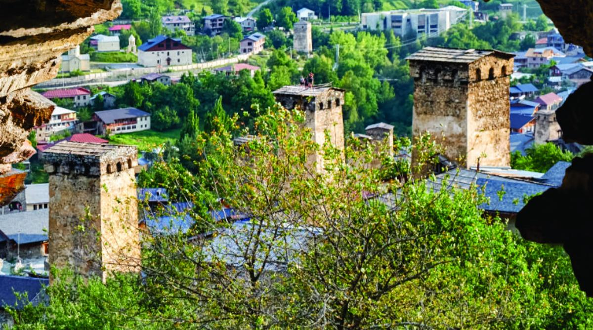
ახლა კი გადავინაცვლოთ ადგილას, რომელიც ყოველი მხრიდან ულამაზესი და უზარმაზარი მთებითაა გარშემორტყმული. გინახავთ როგორ ეფინება ნისლი და ღრუბლები მთლის კალთებს და ცამდე აზვირთულ მწვერვალებს მალავს? ამას საუკეთესოდ სვანეთის ყველაზე გასაოცარი ადგილიდან, მესტიიდან ნახავთ. სანამ დაიძვრებით, გაფრთხილებთ, რომ თბილისი ტანსაცმელი აუცილებლად უნდა მოიმარაგოთ, რადგან სვანეთში ჰაერის ტემპერატურა ზაფხულშიც კი საკმაოდ გრილია.
ზამთარ-ზაფხულ აქ ხალხმრავლობა და ტურისტების დიდი ნაკაში შეიმჩნევა. ზაფხულში ბუნება განსაკუთრებით ლამაზი და მიმზიდველია, ირგვლივ სულ სიმწვანეა, შორეული მთების მწვერვალებიდან კი ბუნებას თოვლი გადმოჰყურებს. ის, რაც აქაურობას განსაკუთრებულს ხდის, სწორედ ველური გარემოსა და ტურისტული ზონების სინთეზია. მესტიის მუნიციპალიტეტში მდებარეობს საქართველოს უმაღლესი მწვერვალი შხარა, რომელიც აუცილებლად უნდა მოინახულოთ, მაგრამ წინასწარ შეემზადეთ - ასეთი სანახაობა ცხოვრებაში იშვიათად შეგხვდებათ. აქვეა კიდევ ერთი უმაღლესი მთა თეთნულდი, რომელიც მსოფლიოს წამყვანი მოლაშქრეების სამიზნე არაერთხელ გამხდარა. ეს სწორედ ის ადგილებია, სადაც ბუნების სიდიადეს მთელი სიმძაფრით შეიგრძნობთ.
დაშბაშის კანიონი
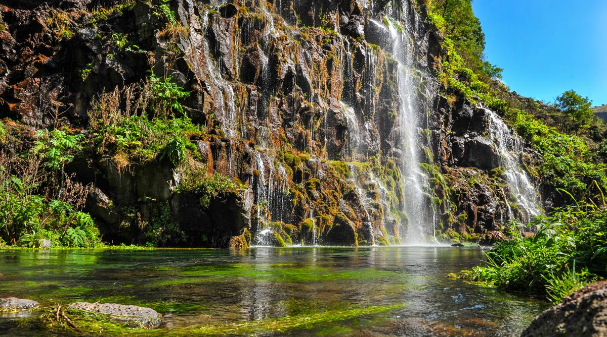
დაშბაშის კანიონი ერთ-ერთია იმ მაგიური ადგილებიდან საქართველოში, რომელიც თავისი სილამაზითა და მისტიურობით თქვენზე წარუშლელ შთაბეჭდილებას დატოვებს. აქაურობა განსაკუთრებით მიმზიდველია მათთვის, ვისაც ბუნებაში საოცარი ფოტოების გადაღება და შემდეგ დასამახსოვრებელი პიკნიკის მოწყობა უყვარს. დაშბაშის კანიონამდე მისვლა განსაკუთრებულ სირთულეს არ წარმოადგენს, მითუმეტეს თუ ასეთ ადგილებში სიარული დიდ სიამოვნებას განიჭებთ. როგორც კი კანიონის პირველი კონტურები გამოიკვეთება, მისი სილამაზე ისე მოგაჯადოვებთ, რომ სრულიად დაგავიწყდებათ განვლილი და გასავლელი მანძილი.
თქვენ აქ შეხვდებით კლდეებიდან მორაკრაკე ჩანჩქერს, ლოდებზე ლამაზად მცურავ მდინარეს, გამოქავაბულებსა და ტყეს, სადაც პიკნიკის მოწყობაც შეგიძლიათ. როდესაც დაშბაშის კანიონს ნახავთ, მრავალფეროვანი ლანდშაფტი კლოდ მონეს მიერ შესრულებული პეიზაჟი გეგონებათ, ამიტომ იქონიეთ თავისუფალი ადგილი ფოტოებისთვის თქვენს მოწყობილობებში, რადგან ფოტოების გადაღებით ვერასოდეს გაძღებით. დაშბაშის კანიონთან ახლოს მდებარეობს ქალაქი წალკა, სადაც შესაძლებლობა გექნებათ დაბინავდეთ სასტუმროში და დააგემოვნოთ ხრამის წყალსაცავში დაჭერილი კალმახი, კობრი, წვერა და სხვა თევზები, რომლებსაც ქართლელები საუკეთესოდ ამზადებენ.
თუშეთი
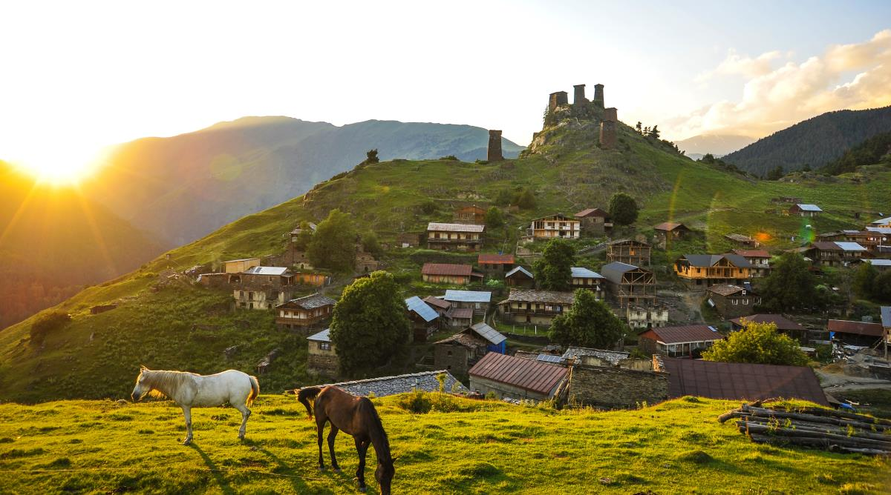
ხიხანის ციხე:
როდესაც მთებსა და მის კულტურაზე ვსაუბრობთ, არ შეიძლება დავივიწყოთ თუშეთი, რომელიც შესაძლოა საქართველოში ერთ-ერთი ყველაზე ექსტრემალური და იდუმალი კუთხეც კი იყოს, რომელიც შეტანილია იუნესკოს მსოფლიო მემკვიდრეობის საცდელ სიაში. თუშეთში მოგზაურობა განსაკუთრებულად საინტერესო და ექსტრემალური გზით იწყება, რომელიც შესაძლოა შიშისმომგვრელიც კი იყოს, თუმცა თუ ცოტა ექსტრემალი ხართ, საოცარი განცდა დაგეუფლებათ.
თუშეთში გავრცელებულია მეცხვარეობა და მესაქონლეობა, რაც ამ კუთხის კულინარიაშიცაა ასახული. ეს არის მხარე, სადაც საქართველოს მთავარი სიმბოლო, ხინკალი, დაბეგვილი ხორცისაგან მზადდება. აქ მოხვედრა ნიშნავს, რომ თქვენ გექნებათ შესაძლებლობა საკუთარი ხელით ისწავლოთ მისი ცომის მოზელვა, შეხვევა, მოხარშვა და თითოეული ეტაპი თუში ქალების დახმარებით გაიაროთ. გიფიქრიათ ოდესმე, რომ ევროპაში ზღვის დონიდან ყველაზე მაღლა მდებარე დასახლებული პუნქტი მოგენახულებინათ? მაშინ, თქვენ სწორად ადგილას ხართ, ხოლო თუ არ გიფიქრიათ, მაშინ ბედმა გაგიღიმათ, რადგან თუშეთში მდებარეობს სოფელი ბოჭორნა, რომელიც არასდროს დაგავიწყდებათ. სახლები ზედ ბორცვზეა აშენებული და როდესაც თავად იხილავთ, იგრძნობთ, რომ აქ ღამის გატარება და ცაზე ვარსკვლავების ყურება მოგინდებათ.
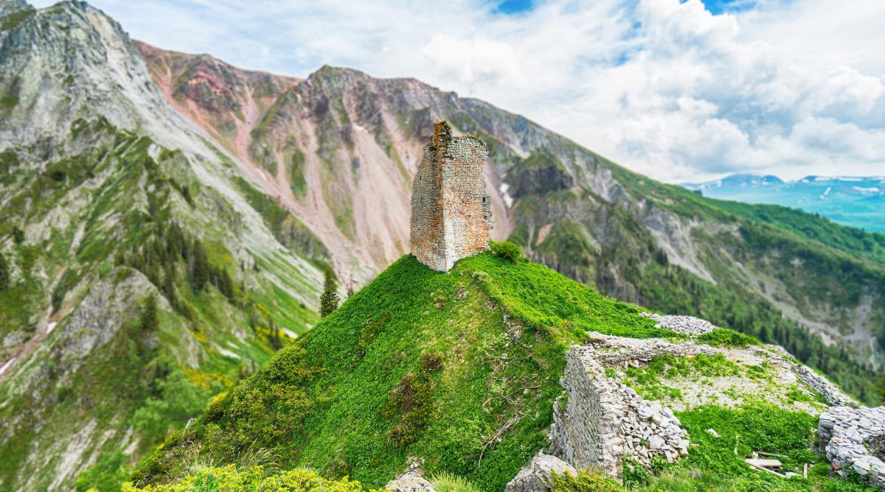
ყველაზე უცნაურ და თვალის მომჭრელ ადგილას სად ყოფილხართ? - თუ ეს ადგილი ხიხანის ციხე არ ყოფილა, მაშინ ყველაფერი წინ გქონიათ. ის შუასაუკუნეებში აგებული ციხეა, რომელსაც ქართველი მეფეები ყველაზე სტრატეგიულ ადგილად მიიჩნევდნენ ომიანობის დროს. მისი არქიტექტურა, ადგილმდებარეობა და მნიშვნელობა ნათლად გიამბობთ, თუ რაოდენ ხშირად ესხმოდნენ საქართველოს დამპყრობლები. როდესაც აქ მოხვდებით, თავს მთათა სისტემის შუაგულში ამოყოფოთ, რადგან ირგვლივ სულ კლდეები და მთებია შემოხვეული. ციხესიმაგრეში შედის სხვადასხვა ნაგებობები: გალავანი, კოშკები, ეკლესია და სხვადასხვა დანიშნულების შენობათა ნაშთები. აქვეა უცნაური ჭა, რომელიც თავის დროზე თოვლის შესანახად გამოიყენებოდა.
როდესაც აქ მოხვდებით, თავს მთათა სისტემის შუაგულში ამოყოფოთ, რადგან ირგვლივ სულ კლდეები და მთებია შემოხვეული. ციხესიმაგრეში შედის სხვადასხვა ნაგებობები: გალავანი, კოშკები, ეკლესია და სხვადასხვა დანიშნულების შენობათა ნაშთები. აქვეა უცნაური ჭა, რომელიც თავის დროზე თოვლის შესანახად გამოიყენებოდა.
პირველი მათგანი ხინკალია, რომელიც წარმოიშვა საქართველოს მთიან რეგიონში. ხინკალი გავს ცომის გუფთას, რომელშიც გვხვდება ან ხორცი, ან ყველი, ან კარტოფილი,ან სოკო. ყველაზე გავრცელებული ვარიანტი ხორცით კეთდება. კარგ ხინკალს შიგნით უნდა ჰქონდეს წვენი. ხინკალს ჭამენ ხელებით, პირველ რიგში პატარაზე უნდა მოკბიჩოთ ცომი და მოხვრიპოთ წვენი, შემდეგ კი შეჭამოთ. ხინკალს გემოვნების მიხედვით ამატებენ შავ პილპილს, ან ძმარს.
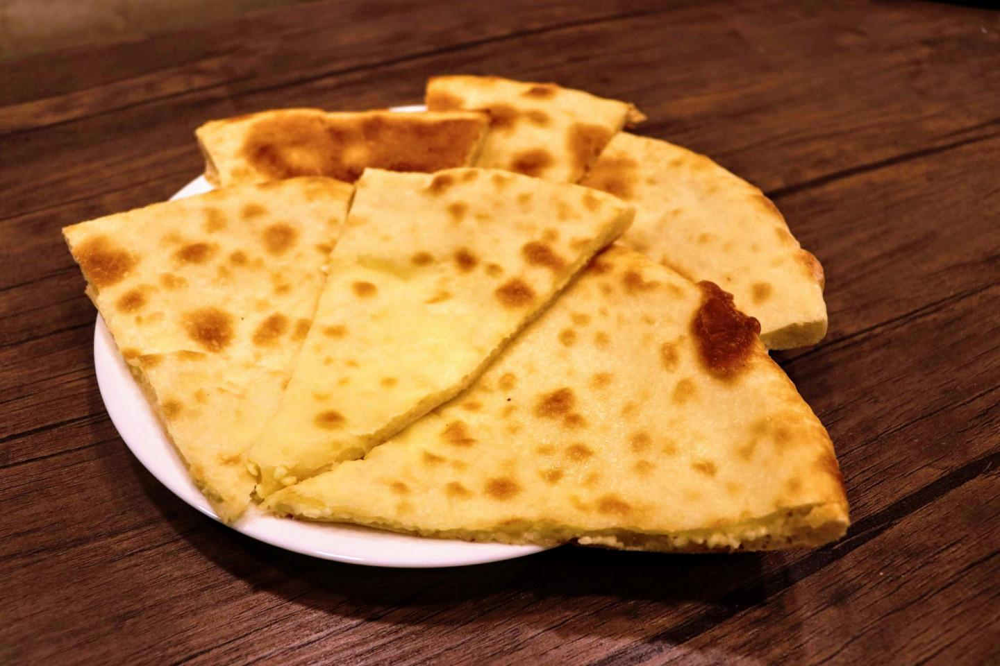
ხაჭაპური ტრადიციული ქართული საჭმელია, რომელიც არის იდიალური თან წასაღებად. ის შედგება სპეციალურად მომზადებული ცომისა და ყველისგან. ზოგი მას პიცასთან აკავშირებს, მაგრამ ხაჭაპურს არ აქვს დამატებითი ელემენტები და არც ისეთი კომპლექსურია, როგორც პიცა. ხაჭაპურის მრავალი სახეობა არსებობს. ჩვენ ათეულში რეკომენდაციას ვუწევთ გემის ფორმიან აჭარულ ხაჭაპურს.
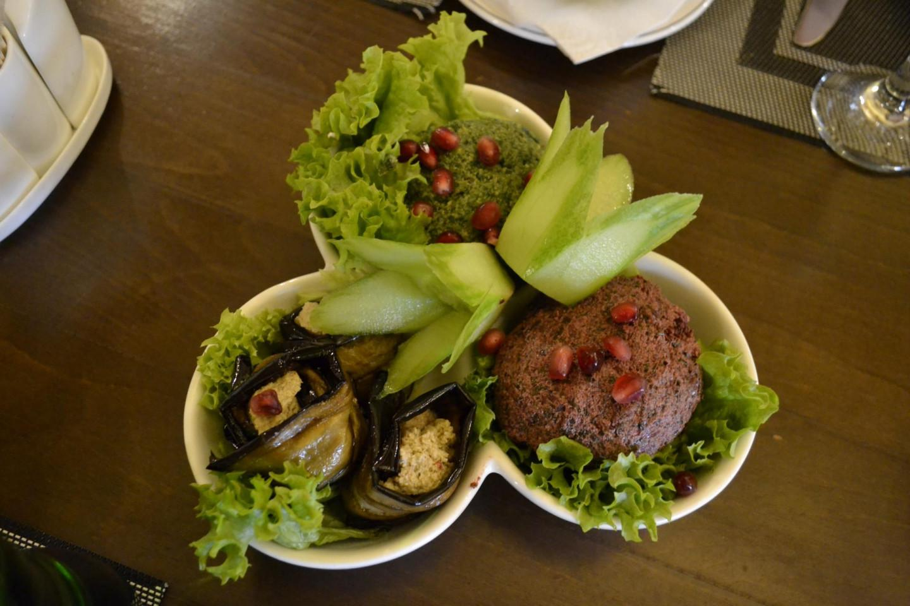
ფხალი ქართული ტრადიციული კერძია. მისი ყველაზე გავრცელებული ვარიანტი კეთდება ისპანახისგან და ჭარხლისგან. ფხალი აუცილებლად გასასინჯი კერძების სიაშია ვეგეტარიანელებისთვის. ფხალი ცივი აპეტაიზერია, შედგება დაკეპილი ბოსტნეულისგან, რომელიც შეზავებული ნიგვზით, მწვანილით, ხახვითა და ნივრით.
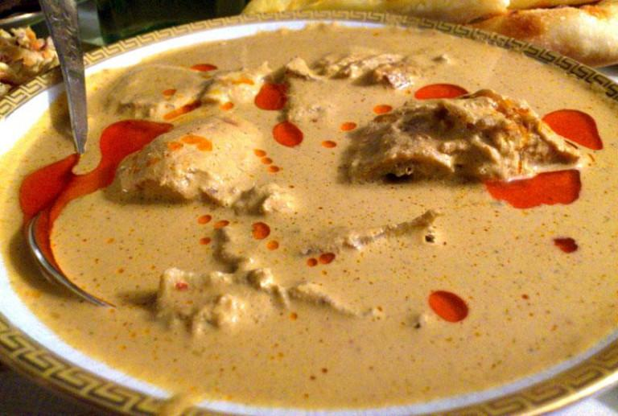
საცივი კიდევ ერთი ქართული ცივი კერძია, რომელიც უნდა გასინჯოთ. ესაა ნიგვზის სოუსი, რომელშიც შეიძლება იდოს ინდაური, ქათამი ან თევზი. საცივს ტრადიციულად საახალწლო სუფრაზე მიირთმევენ.
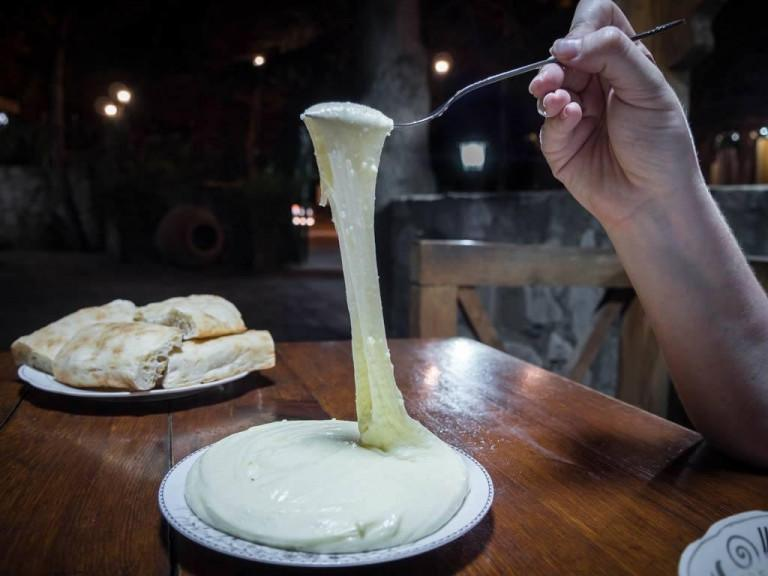